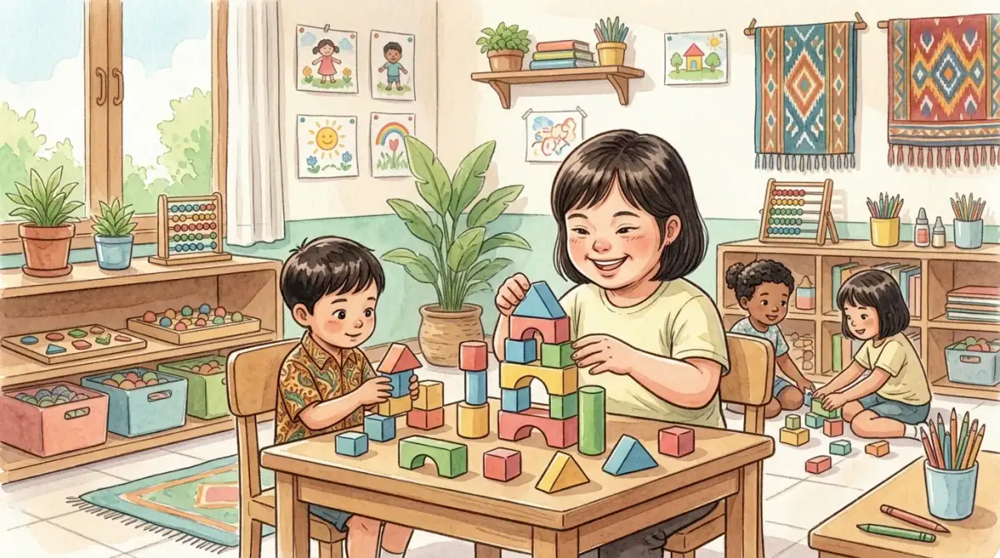

Down syndrome adalah kondisi genetik akibat salinan tambahan kromosom 21 yang memengaruhi perkembangan fisik, kognitif, dan kesehatan anak. Dengan stimulasi dini, terapi yang sesuai, dukungan keluarga, dan kesempatan belajar inklusif, anak dengan Down syndrome dapat berkembang lebih mandiri sesuai potensinya.
Ringkasan cepat: down syndrome karena apa?
Down syndrome adalah kondisi genetik yang umumnya terjadi karena adanya salinan ekstra kromosom 21. Kondisi ini dapat memengaruhi perkembangan fisik, kemampuan belajar, tonus otot, serta kebutuhan dukungan kesehatan dan pendidikan anak.
Intinya, down syndrome bukan kesalahan orang tua. Dukungan paling penting adalah stimulasi dini, pemeriksaan kesehatan rutin, lingkungan belajar inklusif, dan target kemandirian yang realistis.
Down syndrome adalah kondisi genetik yang terjadi ketika seseorang memiliki salinan ekstra pada kromosom 21, sehingga jumlah total kromosomnya menjadi 47, bukan 46 seperti pada umumnya. Kondisi ini juga dikenal sebagai trisomi 21 atau sindrom down. WHO menempatkan Down syndrome sebagai salah satu kelainan bawaan berat yang paling umum, bersama kelainan jantung dan kelainan tabung saraf. CDC juga mencatat Down syndrome sebagai kondisi kromosom yang paling sering didiagnosis di Amerika Serikat.
Catatan tentang angka prevalensi di Indonesia: sampai artikel ini diperbarui, Indonesia belum memiliki angka prevalensi Down syndrome nasional yang dipublikasikan sebagai data resmi. Kementerian Kesehatan sendiri masih mendorong pembangunan registry anak dengan fokus awal pada Down syndrome dan penyakit jantung bawaan. Karena itu kami tidak mencantumkan estimasi jumlah kelahiran per tahun yang tidak dapat kami telusuri ke sumber resmi.
Di Yayasan Ukhuwah Kaffah Amanatullah (YUKA), kami memiliki pengalaman langsung mendampingi anak-anak down syndrome melalui Sekolah Inklusi Taruna Imani di Sleman, Yogyakarta. Kami menyaksikan sendiri bagaimana anak-anak dengan sindrom down dapat berkembang, belajar, dan menunjukkan potensi luar biasa ketika diberikan dukungan yang tepat. Artikel ini kami tulis berdasarkan pengalaman nyata di lapangan, dikombinasikan dengan pengetahuan medis dan pendidikan terkini.
Sebagai bagian dari anak berkebutuhan khusus (ABK), anak down syndrome memiliki hak yang sama untuk mendapatkan pendidikan, kasih sayang, dan kesempatan berkembang. Dalam Islam, setiap anak adalah amanah dari Allah SWT. Rasulullah SAW bersabda: "Setiap anak dilahirkan dalam keadaan fitrah." (HR. Bukhari-Muslim). Fitrah ini melekat pada setiap anak tanpa terkecuali, termasuk anak dengan down syndrome.
Daftar Isi
Pengertian Down Syndrome (Sindrom Down)
Down syndrome adalah kelainan genetik yang disebabkan oleh adanya salinan tambahan pada kromosom 21, baik secara penuh maupun sebagian. Kondisi ini pertama kali dideskripsikan oleh dokter asal Inggris bernama John Langdon Down pada tahun 1866, dan penyebab genetiknya ditemukan oleh Jerome Lejeune pada tahun 1959. Nama "down syndrome" diambil dari nama Dr. John Langdon Down yang pertama kali mengidentifikasi karakteristik klinis kondisi ini.
Dalam istilah medis, down syndrome disebut juga trisomi 21 karena berkaitan langsung dengan kromosom 21. Pada manusia normal, setiap sel tubuh memiliki 23 pasang kromosom atau total 46 kromosom. Pada individu dengan sindrom down, terdapat satu salinan ekstra pada kromosom 21 sehingga totalnya menjadi 47 kromosom. Kelebihan materi genetik inilah yang memengaruhi perkembangan fisik dan kognitif seseorang.
Penting untuk dipahami bahwa down syndrome adalah kondisi, bukan penyakit. Anak down syndrome bukan anak yang sakit dan memerlukan penyembuhan. Mereka adalah individu unik dengan karakteristik tertentu yang membutuhkan pendekatan, dukungan, dan pendampingan yang disesuaikan dengan kebutuhannya. Dengan intervensi dini dan lingkungan yang suportif, anak down syndrome dapat menjalani kehidupan yang bermakna, produktif, dan bahagia.
Tahukah Anda?
Tanggal 21 Maret diperingati sebagai Hari Down Syndrome Sedunia (World Down Syndrome Day). Pemilihan tanggal 21/3 merujuk pada kromosom ke-21 yang memiliki 3 salinan (trisomi 21). Peringatan ini bertujuan meningkatkan kesadaran dan inklusi bagi individu dengan sindrom down di seluruh dunia.
Ciri-Ciri Down Syndrome pada Anak
Mengenali ciri-ciri down syndrome sejak dini sangat penting agar anak dapat segera mendapatkan intervensi dan stimulasi yang tepat. Secara umum, anak down syndrome memiliki karakteristik fisik yang khas, meskipun setiap anak menunjukkan tingkat keparahan yang berbeda-beda. Berikut adalah ciri-ciri yang perlu diperhatikan:
Ciri-Ciri Fisik Anak Down Syndrome
- Wajah tampak datar, terutama pada bagian batang hidung (flat facial profile)
- Mata miring ke atas (upward slanting eyes) dengan lipatan kulit pada sudut dalam mata (epicanthal folds)
- Leher pendek dengan kulit berlebih di bagian belakang
- Telinga kecil dengan posisi yang sedikit lebih rendah dari normal
- Lidah cenderung menjulur karena rongga mulut yang lebih kecil
- Tangan lebar dan pendek dengan garis tangan tunggal (single palmar crease)
- Jari-jari pendek, terutama jari kelingking yang melengkung ke dalam (clinodactyly)
- Tonus otot lemah (hipotonia) yang menyebabkan tubuh tampak lemas
- Perawakan pendek dibandingkan anak seusianya
- Bintik putih pada iris mata (Brushfield spots)
Ciri-Ciri Perkembangan Anak Down Syndrome
- Keterlambatan perkembangan motorik, seperti duduk, merangkak, dan berjalan yang lebih lambat dari usia normalnya
- Keterlambatan bicara dan perkembangan bahasa
- Kemampuan kognitif di bawah rata-rata, dengan IQ umumnya berkisar antara 30 hingga 70
- Kesulitan dalam memproses informasi dan memori jangka pendek
- Perkembangan sosial yang relatif baik, karena anak down syndrome umumnya memiliki sifat yang hangat, ramah, dan penyayang

Kondisi Kesehatan yang Sering Menyertai
Selain ciri-ciri fisik dan perkembangan, anak down syndrome juga rentan mengalami beberapa kondisi kesehatan penyerta, antara lain:
- Kelainan jantung bawaan, dialami 50 sampai 65% bayi yang lahir dengan Down syndrome
- Gangguan pendengaran, dapat memengaruhi sampai 75% penyandang
- Sleep apnea obstruktif (napas berhenti sesaat saat tidur), 50 sampai 75%
- Infeksi telinga berulang, 50 sampai 70%
- Gangguan penglihatan seperti katarak, mata juling (strabismus), dan rabun
- Gangguan tiroid (hipotiroidisme)
- Masalah pencernaan dan gangguan saluran cerna
Sumber angka di atas: CDC, Living with Down Syndrome. Kutipan aslinya: "Between 50 and 65% of all babies born with Down syndrome are also born with a congenital heart defect."
Meskipun daftar ini terlihat panjang, penting untuk diingat bahwa tidak semua anak down syndrome mengalami seluruh kondisi tersebut. Pemeriksaan kesehatan rutin dan deteksi dini sangat penting agar kondisi penyerta dapat ditangani dengan baik.
Penyebab Down Syndrome: Trisomi 21
Down syndrome adalah kondisi yang disebabkan oleh kelainan pada kromosom 21. Dalam proses normal pembelahan sel, setiap sel anak akan mewarisi 23 kromosom dari ibu dan 23 kromosom dari ayah, sehingga totalnya 46 kromosom. Pada down syndrome, terjadi kesalahan dalam pembelahan sel yang mengakibatkan adanya materi genetik tambahan pada kromosom 21.
Penyebab pasti mengapa terjadi kesalahan pembelahan sel ini belum sepenuhnya diketahui oleh para ilmuwan. Namun, beberapa faktor risiko telah diidentifikasi:
- Usia ibu saat hamil: CDC menyatakan risiko melahirkan bayi dengan Down syndrome meningkat seiring bertambahnya usia ibu. Tabel insidensi per usia yang dipublikasikan National Down Syndrome Society (NDSS) mencantumkan 1 dari 1.200 pada usia 25 tahun, 1 dari 350 pada usia 35 tahun, 1 dari 100 pada usia 40 tahun, dan sekitar 1 dari 30 pada usia 45 tahun.
- Usia ibu bukan penentu tunggal: NDSS pada halaman yang sama mencatat bahwa 51% anak dengan Down syndrome justru lahir dari ibu berusia di bawah 35 tahun, karena angka kelahiran pada kelompok usia itu jauh lebih besar. Jadi usia muda bukan jaminan bebas risiko, dan skrining tetap relevan untuk semua usia.
- Riwayat keluarga: Orang tua yang merupakan carrier translokasi seimbang memiliki risiko lebih tinggi.
- Riwayat kehamilan sebelumnya: Menurut NDSS, orang tua yang pernah melahirkan bayi dengan trisomi 21 (nondisjunction) atau translokasi memiliki peluang sekitar 1 dari 100 untuk kembali memiliki bayi dengan trisomi 21, sampai usia ibu 40 tahun.
Perlu ditekankan bahwa down syndrome bukan disebabkan oleh kesalahan orang tua selama kehamilan. Kondisi ini bukan akibat pola makan, gaya hidup, atau aktivitas tertentu selama hamil. Down syndrome terjadi secara acak sebagai bagian dari proses genetik, dan bisa terjadi pada siapa saja tanpa memandang latar belakang sosial, ekonomi, suku, atau agama.
"Setiap anak yang lahir ke dunia ini adalah takdir dan kehendak Allah SWT. Anak down syndrome bukan beban, melainkan amanah yang mulia. Tugas kita sebagai orang tua dan masyarakat adalah memberikan yang terbaik untuk mereka." - Tim Pendidik YUKA
Jenis-Jenis Down Syndrome
Berdasarkan mekanisme genetik yang mendasarinya, down syndrome dapat dibedakan menjadi tiga jenis utama. Ketiga jenis ini memiliki manifestasi klinis yang serupa, namun berbeda dalam mekanisme terjadinya:
1. Trisomi 21 (Nondisjunction)
Ini adalah jenis down syndrome yang paling umum. Menurut CDC, sekitar 95% penyandang Down syndrome memiliki tipe trisomi 21. Pada trisomi 21, setiap sel dalam tubuh memiliki tiga salinan kromosom 21, bukan dua. Kondisi ini terjadi karena kegagalan pemisahan kromosom (nondisjunction) selama pembentukan sel telur atau sel sperma, sehingga salah satu sel reproduksi membawa dua salinan kromosom 21.
2. Translokasi
Menurut CDC, tipe ini mencakup sekitar 3% penyandang Down syndrome. Pada translokasi, jumlah total kromosom tetap 46, tetapi sebagian atau seluruh salinan ekstra kromosom 21 menempel pada kromosom lain, biasanya kromosom 14. Jenis ini penting untuk diidentifikasi karena salah satu orang tua mungkin merupakan carrier (pembawa) translokasi seimbang, yang dapat meningkatkan risiko memiliki anak down syndrome lagi pada kehamilan berikutnya.
3. Mosaikisme
Mosaikisme adalah jenis sindrom down yang paling jarang. CDC mencatat tipe ini mencakup sekitar 2% penyandang Down syndrome. Pada mosaikisme, hanya sebagian sel tubuh yang memiliki tiga salinan kromosom 21, sementara sel lainnya normal dengan 46 kromosom. Anak dengan down syndrome mosaik umumnya menunjukkan ciri-ciri yang lebih ringan dan kemampuan kognitif yang lebih baik dibandingkan trisomi 21 penuh.

Tumbuh Kembang dan Pendidikan Anak Down Syndrome
Salah satu hal terpenting yang perlu dipahami oleh orang tua dan masyarakat adalah bahwa anak down syndrome tetap dapat belajar, berkembang, dan mencapai berbagai pencapaian. Proses perkembangannya memang lebih lambat dibandingkan anak pada umumnya, tetapi dengan stimulasi dan dukungan yang konsisten, mereka dapat mencapai potensi terbaiknya.
Perkembangan Motorik
Anak down syndrome umumnya mencapai milestone motorik lebih lambat daripada anak seusianya, dan rentang waktunya sangat bervariasi antar anak. Hipotonia (tonus otot yang lemah) yang sering ditemukan pada anak down syndrome menjadi salah satu penyebab keterlambatan ini. Kami sengaja tidak mencantumkan rentang usia rata-rata yang spesifik di sini karena angka yang beredar luas sulit ditelusuri ke rujukan resmi, dan membandingkan anak dengan tabel yang salah justru membuat orang tua panik tanpa alasan. Yang lebih berguna adalah memantau arah kemajuan anak bersama dokter anak atau fisioterapis, bukan mengejar tanggal. Fisioterapi dan latihan motorik yang rutin terbukti membantu anak mencapai kemampuan motoriknya.
Perkembangan Bahasa dan Komunikasi
Kemampuan bahasa reseptif (memahami bahasa) pada anak down syndrome umumnya lebih baik daripada kemampuan bahasa ekspresif (mengungkapkan bahasa). Artinya, mereka sering kali memahami lebih banyak dari apa yang bisa mereka ucapkan. Terapi wicara yang dimulai sejak dini sangat berperan penting dalam mengembangkan kemampuan komunikasi mereka. Selain terapi wicara, penggunaan bahasa isyarat atau alat komunikasi alternatif juga dapat membantu anak mengekspresikan kebutuhannya.
Pendidikan untuk Anak Down Syndrome
Anak down syndrome berhak mendapatkan pendidikan inklusi yang memungkinkan mereka belajar bersama anak-anak lain di lingkungan yang inklusif. Kurikulum yang dimodifikasi sesuai kemampuan anak, didukung oleh guru pendamping khusus (GPK), terbukti efektif dalam mengembangkan potensi akademik dan sosial anak down syndrome.
Di banyak negara maju, anak-anak down syndrome berhasil menyelesaikan pendidikan dasar dan menengah di sekolah reguler. Beberapa bahkan berhasil menempuh pendidikan tinggi dan mendapatkan pekerjaan yang bermakna. Kunci keberhasilannya terletak pada kualitas pendidikan inklusi, dukungan keluarga, serta program intervensi dini yang komprehensif. Baca artikel kami tentang peran orang tua dalam pendidikan inklusi untuk memahami pentingnya kolaborasi antara keluarga dan sekolah.
Cara Mendukung Anak Down Syndrome
Mendukung tumbuh kembang anak down syndrome membutuhkan pendekatan yang holistik, sabar, dan penuh kasih sayang. Berikut adalah langkah-langkah konkret yang dapat dilakukan berdasarkan pengalaman YUKA mendampingi anak-anak dengan sindrom down selama bertahun-tahun:
1. Intervensi Dini (Early Intervention)
Intervensi dini adalah langkah paling krusial. Semakin cepat anak mendapatkan stimulasi dan terapi yang tepat, semakin optimal perkembangannya. Program intervensi dini idealnya dimulai sejak bayi dan mencakup fisioterapi, terapi wicara, dan terapi okupasi. CDC menyebut layanan intervensi dini sebagai bagian dari perawatan yang membantu anak dengan Down syndrome mengembangkan kemampuannya semaksimal mungkin. Dari pengalaman kami mendampingi anak di Sekolah Inklusi Taruna Imani, anak yang rutin mengikuti terapi sejak dini lebih cepat mandiri dalam aktivitas sehari-hari, meski kecepatannya tetap berbeda-beda per anak.
2. Terapi yang Komprehensif
Beberapa jenis terapi yang terbukti bermanfaat bagi anak down syndrome:
- Fisioterapi untuk memperkuat otot-otot yang lemah dan meningkatkan kemampuan motorik kasar
- Terapi wicara untuk mengembangkan kemampuan komunikasi dan bahasa
- Terapi okupasi untuk melatih keterampilan motorik halus dan kemandirian sehari-hari
- Terapi memasak yang sangat efektif melatih motorik halus, sensorik, konsentrasi, dan kemandirian secara bersamaan
- Terapi sensorik integrasi untuk membantu anak memproses rangsangan dari lingkungan
3. Pendidikan yang Tepat
Memilih lingkungan pendidikan yang sesuai sangat menentukan masa depan anak down syndrome. Sekolah inklusi yang memiliki guru pendamping khusus dan kurikulum yang dimodifikasi merupakan pilihan ideal bagi sebagian besar anak dengan sindrom down. Lingkungan inklusi memungkinkan mereka belajar keterampilan sosial dari teman sebaya sekaligus mendapatkan pendampingan individual yang mereka butuhkan. Untuk panduan memilih lembaga yang tepat, baca artikel kami tentang cara memilih yayasan terbaik untuk anak berkebutuhan khusus.
4. Pengembangan Life Skills
Keterampilan hidup sehari-hari (life skills) adalah fokus utama dalam pendidikan anak down syndrome. Melatih mereka untuk makan sendiri, berpakaian, menjaga kebersihan diri, memasak sederhana, dan berbelanja adalah investasi jangka panjang untuk kemandirian mereka di masa depan. Di YUKA, program pemberdayaan anak berkebutuhan khusus dirancang untuk mengembangkan keterampilan ini secara bertahap dan menyenangkan.
5. Dukungan Emosional dan Penerimaan Keluarga
Fondasi terpenting bagi tumbuh kembang anak down syndrome adalah penerimaan dan kasih sayang tanpa syarat dari keluarga. Orang tua yang menerima kondisi anaknya dengan ikhlas dan positif akan menciptakan lingkungan yang mendukung perkembangan optimal. Bergabung dengan komunitas orang tua anak berkebutuhan khusus juga sangat membantu untuk saling berbagi pengalaman, motivasi, dan informasi. Artikel kami tentang tips mendampingi anak berkebutuhan khusus dengan kasih sayang berisi panduan praktis yang juga relevan bagi orang tua anak down syndrome.
6. Kesehatan dan Pemeriksaan Rutin
Karena anak down syndrome rentan terhadap beberapa kondisi kesehatan penyerta, pemeriksaan kesehatan rutin sangat penting. Jadwalkan pemeriksaan jantung, pendengaran, penglihatan, tiroid, dan pertumbuhan secara berkala sesuai rekomendasi dokter. Deteksi dan penanganan dini terhadap masalah kesehatan akan sangat memengaruhi kualitas hidup anak.
Pengalaman YUKA Mendampingi Anak Down Syndrome
Sejak berdiri, Yayasan Ukhuwah Kaffah Amanatullah (YUKA) telah mendampingi berbagai anak berkebutuhan khusus, termasuk anak-anak dengan down syndrome, melalui Sekolah Inklusi Taruna Imani di Sleman, Yogyakarta. Pengalaman bertahun-tahun ini mengajarkan kami bahwa anak down syndrome adalah anak-anak yang penuh kasih sayang, antusias, dan memiliki semangat belajar yang tinggi.
Salah satu kekuatan anak down syndrome yang kami saksikan setiap hari adalah kemampuan sosial mereka yang luar biasa. Mereka sering kali menjadi "perekat" di antara teman-temannya di kelas. Sifat ramah, hangat, dan penuh empati yang mereka miliki membuat lingkungan kelas menjadi lebih inklusif dan penuh kebersamaan.
Program Unggulan YUKA untuk Anak Down Syndrome
Di YUKA, kami menerapkan pendekatan pendidikan yang menyeluruh untuk anak down syndrome. Program cooking class menjadi salah satu kegiatan favorit, di mana anak-anak belajar mengukur bahan, mengaduk adonan, menghias kue, dan menikmati hasil karya mereka sendiri. Kegiatan ini bukan sekadar memasak, tetapi melatih motorik halus, kemampuan mengikuti instruksi, kerja sama, dan yang terpenting, membangun rasa percaya diri. Baca lebih lanjut tentang manfaat terapi memasak untuk anak berkebutuhan khusus.
Selain cooking class, YUKA juga menyelenggarakan berbagai program yang mendukung perkembangan anak down syndrome secara menyeluruh:
- Pendidikan akademik dan diniyah dengan kurikulum yang dimodifikasi sesuai kemampuan masing-masing anak, termasuk pendidikan agama Islam
- Program life skills yang mengajarkan keterampilan hidup sehari-hari secara bertahap dan menyenangkan
- Wisata edukasi ke berbagai destinasi edukatif di Yogyakarta, seperti kunjungan ke candi dan museum, yang memperluas wawasan dan keterampilan sosial anak
- Kegiatan seni dan kreativitas seperti melukis, bernyanyi, dan bergerak yang mengembangkan ekspresi diri anak
- Program pemberdayaan bagi anak berkebutuhan khusus dewasa untuk menjadi mandiri secara ekonomi, seperti yang telah berhasil dilakukan melalui kisah inspiratif Mas Ilham

YUKA merupakan yayasan sosial untuk anak berkebutuhan khusus yang terdaftar secara resmi di Kementerian Hukum dan HAM Republik Indonesia. Seluruh program kami dirancang dengan mengutamakan kepentingan terbaik bagi anak. Kami percaya bahwa setiap anak, termasuk anak down syndrome, memiliki cahaya keistimewaan yang hanya perlu diberikan wadah untuk bersinar.
Jika Anda memiliki anak down syndrome atau ingin mengetahui lebih lanjut tentang program pendidikan inklusi di YUKA, jangan ragu untuk menghubungi kami. Kami siap berdiskusi dan memberikan konsultasi mengenai langkah terbaik untuk mendukung tumbuh kembang anak Anda.

Pertanyaan yang Sering Diajukan (FAQ)
Apa itu down syndrome?
Down syndrome adalah kondisi genetik yang terjadi ketika seseorang memiliki salinan ekstra kromosom 21, sehingga totalnya menjadi 47 kromosom, bukan 46 seperti pada umumnya. Kondisi ini juga dikenal sebagai trisomi 21 dan memengaruhi perkembangan fisik serta kognitif anak. Down syndrome bukan penyakit, melainkan kondisi bawaan yang terjadi secara genetik.
Apa saja ciri-ciri anak down syndrome?
Ciri-ciri down syndrome meliputi: wajah yang tampak datar terutama pada batang hidung, mata yang miring ke atas, leher pendek, telinga kecil, lidah yang cenderung menjulur keluar, tangan lebar dengan jari-jari pendek, serta tonus otot yang lemah (hipotonia). Anak down syndrome juga umumnya mengalami keterlambatan perkembangan motorik, bahasa, dan kognitif. Setiap anak memiliki tingkat keparahan yang berbeda-beda.
Apakah down syndrome bisa disembuhkan?
Down syndrome tidak bisa disembuhkan karena merupakan kondisi genetik bawaan yang melekat pada setiap sel tubuh. Namun, dengan intervensi dini, terapi yang tepat, pendidikan inklusi, dan dukungan keluarga yang konsisten, anak down syndrome dapat berkembang secara optimal. Banyak individu down syndrome yang berhasil menjalani kehidupan mandiri, bekerja, dan berkontribusi positif bagi masyarakat.
Bagaimana cara mendukung tumbuh kembang anak down syndrome?
Cara mendukung anak down syndrome meliputi: memberikan stimulasi dini sejak bayi, mengikuti program terapi (fisioterapi, terapi wicara, terapi okupasi), memilih lingkungan pendidikan yang inklusif, melatih keterampilan hidup sehari-hari (life skills), melakukan pemeriksaan kesehatan rutin, serta memberikan kasih sayang dan penerimaan tanpa syarat dari keluarga. Bergabung dengan komunitas orang tua ABK juga sangat membantu.
Di mana anak down syndrome bisa mendapatkan pendidikan yang tepat di Yogyakarta?
Di Yogyakarta, anak down syndrome bisa mendapatkan pendidikan di Sekolah Inklusi Taruna Imani yang dikelola oleh YUKA (Yayasan Ukhuwah Kaffah Amanatullah) di Sleman. YUKA menyediakan pendidikan inklusi, terapi, life skills, cooking class, wisata edukasi, dan program pemberdayaan yang disesuaikan dengan kebutuhan setiap anak. Hubungi kami di +62 812-2991-2332 atau kunjungi halaman kontak.
Kesimpulan
Down syndrome adalah kondisi genetik yang disebabkan oleh kelebihan kromosom 21. Meskipun anak down syndrome menghadapi tantangan dalam perkembangan fisik dan kognitif, mereka memiliki potensi yang luar biasa untuk belajar, berkembang, dan menjalani kehidupan yang bermakna. Kunci utamanya adalah intervensi dini, pendidikan yang tepat, terapi yang konsisten, dan dukungan penuh dari keluarga serta masyarakat.
Sebagai masyarakat, mari kita bersama-sama menciptakan lingkungan yang inklusif dan penuh penerimaan bagi anak-anak down syndrome. Setiap anak berhak mendapatkan kesempatan untuk tumbuh, belajar, dan menunjukkan potensi terbaiknya. Jika Anda memiliki anak down syndrome atau ingin berkontribusi membantu pendidikan anak berkebutuhan khusus, silakan menghubungi YUKA. Bersama-sama, kita bisa menjadi bagian dari perubahan yang berarti bagi masa depan anak-anak istimewa ini.
Baca Juga Artikel Terkait:
Tentang artikel ini
- Ditulis oleh: Tim Edukasi Yayasan Ukhuwah Kaffah Amanatullah (YUKA), pengelola Sekolah Inklusi Taruna Imani, Sleman, Yogyakarta.
- Dasar pengalaman: pendampingan harian anak berkebutuhan khusus, termasuk anak dengan Down syndrome, di sekolah dan program terapi kami sendiri.
- Dasar rujukan medis: WHO, CDC, Kementerian Kesehatan RI, dan National Down Syndrome Society. Semua angka ditautkan langsung ke halaman yang memuatnya.
- Terbit: 19 Maret 2026. Pembaruan terakhir: 3 Agustus 2026 (audit sitasi menyeluruh).
- Status tinjauan medis: artikel ini disusun oleh tim pendidik, belum ditinjau oleh dokter berlisensi. Tinjauan oleh tenaga medis berkredensial sedang kami siapkan, dan status ini akan diperbarui di halaman ini begitu tinjauan selesai. Untuk keputusan diagnosis atau pengobatan, rujuklah pada dokter anak atau psikiater anak.
- Kebijakan koreksi: jika Anda menemukan klaim yang keliru atau sumber yang tidak cocok, beri tahu kami lewat halaman kontak. Kami memperbaiki isinya dan mencantumkan catatan koreksi secara terbuka di bagian sumber, seperti catatan 3 Agustus 2026 di bawah ini.
Sumber Resmi & Referensi Authoritative
Setiap angka dan kriteria medis di artikel ini ditautkan ke halaman sumber yang benar-benar memuatnya. Daftar lengkapnya:
- CDC: Down Syndrome (tipe trisomi 21 95%, translokasi 3%, mosaik 2%, faktor risiko usia ibu) cdc.gov
- CDC: Living with Down Syndrome (kelainan jantung bawaan 50-65%, gangguan pendengaran, sleep apnea) cdc.gov
- WHO Fact Sheet: Congenital disorders (Down syndrome sebagai kelainan bawaan berat paling umum) who.int
- National Down Syndrome Society: tabel insidensi menurut usia ibu dan risiko kehamilan berikutnya ndss.org
- Kemenkes Yankes: Down Syndrome pada Anak yang Harus Ditangani keslan.kemkes.go.id
- Kemenkes Ayo Sehat: Kumpulan Link Penting untuk Anak Disabilitas ayosehat.kemkes.go.id
- UU No. 8 Tahun 2016 tentang Penyandang Disabilitas peraturan.bpk.go.id
Catatan koreksi 3 Agustus 2026: versi sebelumnya artikel ini menautkan klaim prevalensi Down syndrome ke WHO fact sheet tentang autisme, halaman yang sama sekali tidak membahas Down syndrome. Klaim itu sudah dihapus. Angka kelainan jantung bawaan juga dikoreksi dari 40-50% menjadi 50-65% sesuai data CDC, dan rentang usia milestone motorik yang tidak dapat ditelusuri sumbernya sudah dihapus.
Disclaimer Medis & Pendidikan: Artikel ini bersifat edukasi umum dan bukan pengganti konsultasi profesional. Untuk diagnosis, asesmen, atau penanganan anak berkebutuhan khusus, silakan konsultasikan langsung dengan dokter anak, psikiater anak, psikolog perkembangan, terapis okupasi, atau tenaga ahli pendidikan khusus yang berlisensi. YUKA Indonesia mendukung pendekatan multidisiplin dan tidak menggantikan peran tenaga medis maupun terapis profesional.